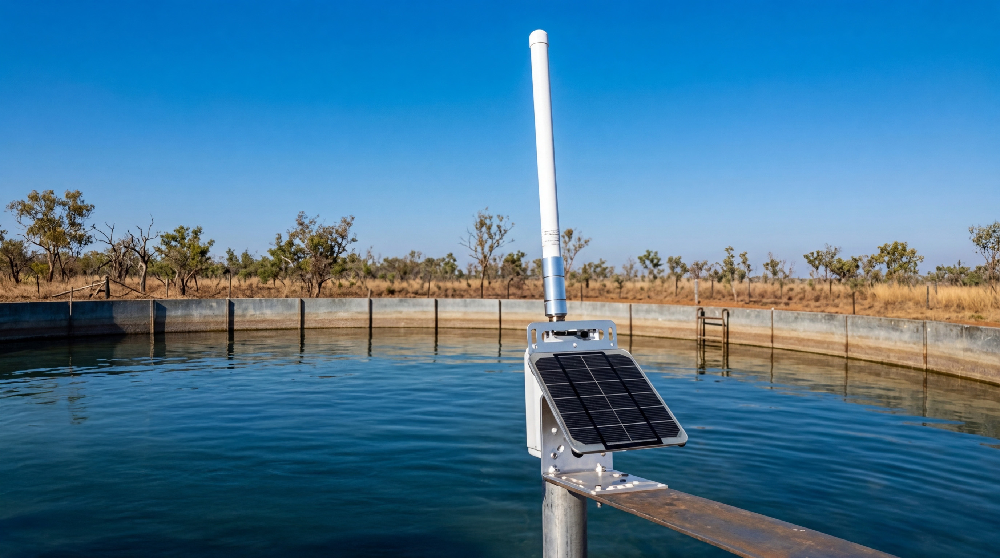
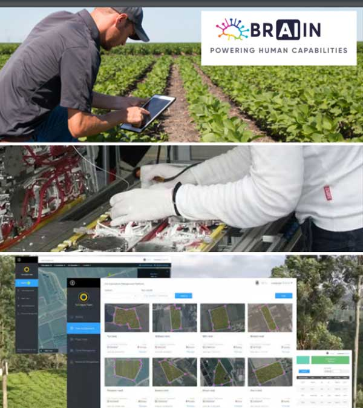

Connected Devices &
Wireless Infrastructure
Reliable wireless connectivity solutions to meet the demands of AgTech IoT, powering monitoring and automation across remote locations.

Connecting devices globally
BRAIIN's IoT division connects devices globally. With the remoteness of most agricultural and mining locations, clients typically face zero wireless connectivity. BRAIIN provides reliable wireless connectivity solutions to meet the demands of AgTech IoT.
The technology provides a connectivity solution as well as reporting on BRAIIN's drones and other third-party IoT assets. Wide array of clients including large agricultural companies, multinational corporations, government departments, defence, emergency services, and SMBs.
Since 2017, BRAIIN's software division has provided software development services and technical resources for the IoT product support service helpdesk and IoT monitoring platform.
Enterprise-grade connectivity solutions
A comprehensive range of IoT devices and wireless infrastructure for agricultural, mining, defence, and enterprise environments.
IoT Automation
Internet of Things automation systems for smart farm and industrial environments.
Wireless Networks
Reliable wireless connectivity for remote agricultural and mining locations.
Cellular Repeaters
Extending cellular coverage to remote and underserved areas.
Modems & Routers
Enterprise-grade networking equipment for IoT connectivity.
Power & Solar
Off-grid power solutions including solar for remote installations.
NOC & Managed Services
Managed services platform for Cel-Fi DAS, Deployables, Matrix Gateways, and IoTs on annual contracts.
Leveraging synergies to power growth
BRAIIN is developing the ERP platform combining data and analytics from both the Raptor aerial robots and sensors from IoTs — including soil, weather, farming productivity and supply chain sensors.
The Robotics division works closely with IoT/Wireless to provide additional services like actionable insights and aerial crop spraying. All divisions continue to enhance product lines through innovation and R&D.
Asia-Pacific support hours are manned between 6am to 9pm AEDT with remote staff based in the Philippines, with additional resources expanding capabilities, operational coverage, and capacity.

Talk to our IoT team
Get in touch to discuss connectivity, sensing and managed services for your remote operations.